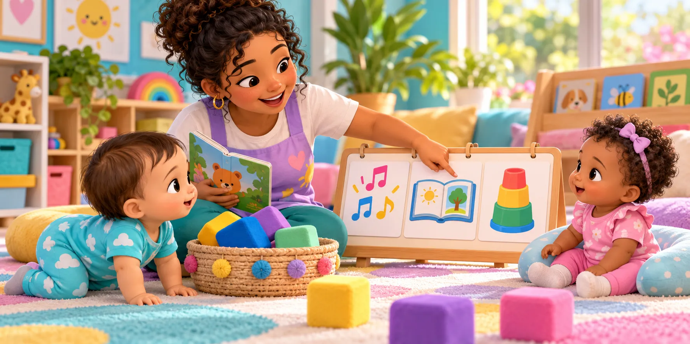
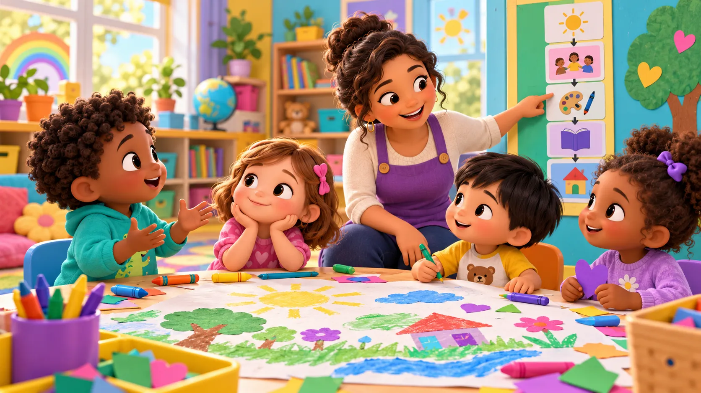

Nível 0
Desde bebê, uma rotina para reconhecer e participar
Encontros conhecidos, descobertas e primeiras orientações para aprender juntos.
A rotina do CMEI organiza tempos de aprender, brincar, investigar e conviver. Cuidado e educação caminham juntos, com planejamento e orientação das professoras.
Família e CMEI se apoiam: rotina conhecida, limites necessários e adultos que explicam, dão o exemplo e acompanham. Há escolhas possíveis e cuidados que precisam acontecer, respeitando a idade e as necessidades de cada criança.
Acolher, cantar, ouvir histórias, investigar, criar e brincar: as professoras organizam experiências que articulam cuidado e educação.
De manhã e à tarde, a rotina relatada do CMEI inclui propostas pedagógicas e recreação com intencionalidade educativa. O primeiro soninho marca a passagem entre os períodos.
Encontros conhecidos, descobertas e primeiras orientações para aprender juntos.
Rotina para reconhecer os encontros. Limites para aprender a conviver.
Meus sentimentos precisam de acolhimento; minhas ações, de orientação.
Amar também é orientar com firmeza e acompanhar com carinho.
Os combinados começam no exemplo de quem cuida.
Conhecer o que vem depois ajuda a participar das descobertas do dia.
Encontros conhecidos, descobertas e primeiras orientações para aprender juntos.

Desde bebê, a criança participa de experiências pedagógicas. Musicalização, histórias e exploração de materiais fazem parte de um dia planejado para aprender.
A rotina organiza a repetição dos encontros e ajuda o bebê a reconhecer seus sinais. Os limites aparecem nas orientações e nos primeiros combinados apresentados pelos adultos: formas de participar, conviver e usar os materiais com segurança.
A música começa… e eu reconheço esse momento!
Toque para descobrirOnde está a rotina? Todos os dias, em um momento previsto da manhã, a professora organiza a roda de musicalização. A canção e os gestos conhecidos podem anunciar o encontro. Com a repetição, alguns bebês se aproximam, sentam com apoio quando necessário, acompanham gestos e experimentam sons e palavras, conforme suas possibilidades. Reconhecer esses sinais pode ajudá-los a antecipar o momento e participar.
Onde estão os limites e os combinados? A professora convida a acompanhar a roda, demonstra os gestos e orienta como usar os materiais e respeitar o espaço do colega. Os combinados são uma maneira acolhedora de apresentar limites, com palavras simples e ações repetidas. Olhar, movimentar-se e vocalizar também são participação; não se exige ficar sentado e imóvel.
O que pode ser aprendido? Escuta, ritmo, expressão corporal e comunicação.
Agora vamos encontrar a história.
Toque para descobrirOnde está a rotina? O livro, o lugar preparado e a voz da professora podem anunciar um encontro conhecido com histórias. Essa continuidade ajuda a reconhecer a experiência; o adulto acompanha os interesses e ajusta seu tempo.
Onde estão os limites e os combinados? “Vamos olhar juntos. Eu ajudo a virar a página.” A professora mostra como manusear e oferece apoio. O bebê não precisa dominar a orientação para participar.
O que pode ser aprendido? Atenção compartilhada, gestos, linguagem e aproximação com a literatura.
Aqui posso tentar, explorar e aprender.
Toque para descobrirOnde está a rotina? A professora prevê momentos de exploração e prepara materiais e espaços. Reencontrar essas oportunidades permite retomar ações e descobrir novas possibilidades, com acompanhamento.
Onde estão os limites e os combinados? O adulto organiza o espaço e mostra formas possíveis de usar os objetos. Se o material pode machucar, interrompe a ação e oferece outra possibilidade segura, sem transformar o encontro em uma sequência de proibições.
O que pode ser aprendido? Movimento, relações entre objetos, iniciativa e investigação.
Você me mostra como participar.
Toque para descobrirMesmo pequenos, os bebês encontram limites nas relações: proteger o corpo do colega e usar os materiais com segurança. A professora apresenta esses primeiros combinados pela fala e pela ação, repetindo a orientação e oferecendo ajuda.
Onde estão os limites e os combinados? “Não vou deixar machucar. Vamos colocar o bloco aqui.” A professora intervém com cuidado, demonstra e acompanha. Conforme a criança cresce, amplia as explicações e a participação nos combinados.
O que pode ser aprendido? Primeiras referências de convivência, construídas com apoio. Não se espera obediência imediata nem autocontrole já pronto.
Às vezes, o bebê pode se afastar do encontro, protestar ou resistir a uma mudança da sequência. É nesse momento que o adulto acolhe, explica e ajuda a participar: “Agora é nosso momento de música. Vou ficar aqui com você. Vamos escutar juntos?”
O adulto continua oferecendo a proposta e sustentando as orientações necessárias, em vez de abandoná-las automaticamente diante da resistência. Pode aproximar o material, oferecer apoio ou uma participação mais breve, sem obrigar o bebê a reproduzir uma ação.
Ao mesmo tempo, observa fome, sono, dor e desconforto. Atender uma necessidade ou ajustar a participação faz parte da mediação pedagógica. A rotina oferece referências, e os limites são apresentados com presença, clareza e respeito às possibilidades do bebê.
O cuidado está presente em cada encontro: perceber cansaço, oferecer apoio corporal, responder ao desconforto e organizar os momentos de alimentação e descanso. Isso permite que o bebê participe das experiências em condições de bem-estar.
Assim, o pedagógico atravessa a rotina, e os cuidados fazem parte dela. A sequência é uma referência: não se deve adiar uma necessidade do bebê para cumprir uma atividade, nem interpretar seu choro como descumprimento de um combinado.
Em casa e no CMEI: adultos podem repetir sinais e orientações simples, oferecer oportunidades de descoberta e conversar sobre como o bebê participa. A rotina pode apoiar sua organização, mas não elimina o choro nem garante tranquilidade o tempo todo.
Barbosa (2006) contribui para pensar a rotina como organização pedagógica do cotidiano. A BNCC (2018) orienta experiências intencionais que articulam cuidado e educação. Mahoney e Almeida (2005), a partir de Wallon, ajudam a compreender a dimensão afetiva das relações de aprendizagem.
La Taille (2002) contribui para a discussão mais ampla sobre limites e convivência. Para os bebês, a aproximação proposta neste card está na responsabilidade do adulto por orientar e acompanhar, sem antecipar exigências de compreensão moral ou de obediência.
As cenas, os sinais de antecipação e as falas sugeridas são exemplos pedagógicos elaborados para o ConectaPais, respeitando diferentes formas e ritmos de participação.
BRASIL. Ministério da Educação. Base Nacional Comum Curricular. Brasília, DF: MEC, 2018. p. 35–40. Consultar documento.
BRASIL. Ministério da Educação. É necessário estabelecer uma rotina no atendimento da educação infantil? Como deve ser essa rotina? Consultar orientações do MEC. Acesso em: 26 out. 2026.
LA TAILLE, Yves de. Uma interpretação psicológica dos “limites” do domínio moral: os sentidos da restrição e da superação. Educar em Revista, n. 19, p. 23–37, 2002. Ler artigo.
BARBOSA, Maria Carmen Silveira. Por amor e por força: rotinas na educação infantil. Porto Alegre: Artmed, 2006. Conhecer a obra.
MAHONEY, Abigail Alvarenga; ALMEIDA, Laurinda Ramalho de. Afetividade e processo ensino-aprendizagem: contribuições de Henri Wallon. Psicologia da Educação, n. 20, p. 11–30, 2005. Ler artigo.
Os exemplos e as falas são propostas pedagógicas do ConectaPais. As aproximações entre os autores e o cotidiano familiar foram elaboradas para este tema. Consulta às fontes digitais: 26 out. 2026.
Rotina para reconhecer os encontros. Limites para aprender a conviver.
Entre 1 e 2 anos, muitas crianças passam a circular mais pelo espaço, buscar o que desejam e querer fazer pequenas ações sozinhas. A rotina ajuda a reconhecer lugares e sequências; os limites ajudam a descobrir que também existem outras pessoas, materiais compartilhados e formas de participar em grupo.
Toque em uma imagem do diagrama. Toque novamente para fechar.
Onde está a rotina? A chegada pode incluir guardar a mochila em um local identificado por uma imagem e encontrar os colegas. Essa sequência ajuda a reconhecer o pertencimento ao grupo. É um exemplo de organização possível, com acompanhamento da professora.
Onde estão os limites e os combinados? “Sua mochila fica aqui. Eu ajudo a colocar.” A criança participa conforme consegue. O lugar do colega também é respeitado; se pega um pertence que não é seu, o adulto ajuda a devolver e encontrar o próprio.
O que pode ser aprendido? Reconhecimento de pertences, relações entre imagens e lugares, participação e pertencimento.
Onde está a rotina? Na proposta de pintura, a professora organiza materiais e apresenta o espaço de criação. A sequência de experimentar, produzir e recolher os materiais é retomada com ajuda.
Onde estão os limites e os combinados? “Ele está usando essa bandeja. Você pode usar esta comigo.” A professora impede que a criança tome à força ou machuque e oferece uma possibilidade concreta. Esperar precisa de apoio e de um tempo possível, sem exigir que já saiba dividir sozinha.
O que pode ser aprendido? Expressão artística, comunicação dos desejos e convivência em uma experiência compartilhada.
Onde está a rotina? Em uma proposta de movimento, a professora organiza um percurso baixo e seguro, mostra possibilidades e acompanha as tentativas. Conhecer o espaço permite explorar com mais iniciativa.
Onde estão os limites e os combinados? “Aqui tem um colega. Vamos por este lado?” A professora cuida da distância entre as crianças e orienta para não empurrar, acompanhando quem precisa de apoio. Não se trata de exigir uma fila longa nem um único jeito de se movimentar.
O que pode ser aprendido? Equilíbrio, orientação espacial, confiança nas ações e atenção à presença de outras pessoas.
Onde está a rotina? Ao terminar uma produção, a criança pode participar de colocar um giz grosso no cesto. A professora mostra essa parte da sequência e oferece tempo para tentar. A participação é pequena e possível, sem exigir que organize tudo sozinha.
Onde estão os limites e os combinados? “Você quer colocar. Pode tentar; eu fico aqui para ajudar.” A vontade de fazer sozinha é acolhida, enquanto o adulto mantém o combinado de cuidar dos materiais e finalizar a experiência. Se houver risco ou necessidade, a ajuda do adulto continua.
O que pode ser aprendido? Iniciativa, coordenação dos movimentos, participação na conclusão de uma experiência e comunicação de pedidos de ajuda.
Quando a criança quer um material do colega ou recusa ajuda, o adulto pode reconhecer seu desejo e orientar uma ação possível: “Você quer fazer sozinho. Pode tentar. Eu ajudo no que precisar.” Se tenta tomar um objeto à força, intervém e oferece apoio para pedir ou encontrar outra opção.
Os combinados apresentam limites nas relações: respeitar o corpo do colega, cuidar do que é compartilhado e participar da organização possível. A professora não abandona a orientação diante do protesto; acompanha a ação e ajusta a ajuda.
A professora observa fome, sono, desconforto e dificuldades. Ajustar a participação e atender necessidades também fazem parte do trabalho pedagógico. Não se espera autocontrole ou compreensão de todas as regras nessa idade.
Em casa, ofereça pequenas oportunidades de participação, mostre onde ficam os pertences e acompanhe o uso do que é compartilhado. “Você pode tentar; eu continuo responsável por ajudar e proteger.” A família não precisa reproduzir propostas escolares.
Cuidar e educar são indissociáveis: bem-estar e apoio tornam possíveis os encontros de música, histórias, investigação e convivência.
Barbosa (2006) ajuda a pensar a rotina como organização pedagógica do cotidiano. A BNCC (2018) orienta experiências intencionais que articulam cuidado e educação. Mahoney e Almeida (2005), a partir de Wallon, contribuem para compreender a dimensão afetiva da aprendizagem.
La Taille (2002) contribui para a discussão de limites e convivência. Neste card, aproximamos essas reflexões da mediação dos adultos, sem atribuir à criança pequena compreensão moral ou obediência já prontas. As falas e as cenas são exemplos pedagógicos do ConectaPais, não relatos de atividades realizadas por todas as turmas.
BRASIL. Ministério da Educação. Base Nacional Comum Curricular. Brasília, DF: MEC, 2018. p. 35–40. Consultar documento.
BRASIL. Ministério da Educação. É necessário estabelecer uma rotina no atendimento da educação infantil? Como deve ser essa rotina? Consultar orientações do MEC. Acesso em: 26 out. 2026.
LA TAILLE, Yves de. Uma interpretação psicológica dos “limites” do domínio moral: os sentidos da restrição e da superação. Educar em Revista, n. 19, p. 23–37, 2002. Ler artigo.
BARBOSA, Maria Carmen Silveira. Por amor e por força: rotinas na educação infantil. Porto Alegre: Artmed, 2006. Conhecer a obra.
MAHONEY, Abigail Alvarenga; ALMEIDA, Laurinda Ramalho de. Afetividade e processo ensino-aprendizagem: contribuições de Henri Wallon. Psicologia da Educação, n. 20, p. 11–30, 2005. Ler artigo.
Os exemplos e as falas são propostas pedagógicas do ConectaPais. As aproximações entre os autores e o cotidiano familiar foram elaboradas para este tema. Consulta às fontes digitais: 26 out. 2026.
Acolher o que a criança sente também é ajudá-la a compreender os limites.
Aos 2 e 3 anos, as crianças ampliam a linguagem, expressam desejos e experimentam fazer escolhas. Uma rotina compreensível ajuda a reconhecer os encontros do dia. Os limites, apresentados por combinados simples e pela ação do adulto, orientam a participação e protegem as relações.
No CMEI, brincar, ouvir histórias, criar e investigar são experiências planejadas para ensinar. O cuidado atravessa esses momentos: acolher, proteger e orientar fazem parte do trabalho pedagógico.
O grupo vai iniciar uma proposta de desenho. Uma criança continua na pista de carrinhos e protesta quando a professora avisa a mudança.
Como o adulto pode agir? Toque nas alternativas para comparar as explicações. Você pode abrir e fechar cada uma.
Onde está a rotina? A sequência entre brincar e participar da proposta é apresentada com avisos e sinais conhecidos.
Onde estão os limites e os combinados? Há um momento coletivo de iniciar outra experiência; a criança pode escolher detalhes, sem ficar responsável por organizar sozinha o dia.
O que pode ser aprendido? Antecipar acontecimentos, fazer escolhas e ampliar as formas de expressão pelo desenho.
Na história com fantoches, uma criança segura vários personagens. Outras também querem participar.
Como o adulto pode agir? Toque nas alternativas para comparar as explicações. Você pode abrir e fechar cada uma.
Onde está a rotina? A história tem um encontro conhecido e formas de participação que a professora retoma com o grupo.
Onde estão os limites e os combinados? Todos têm espaço para participar. O desejo de uma criança não autoriza tirar das outras a oportunidade de explorar.
O que pode ser aprendido? Escutar e criar narrativas, representar personagens e considerar os colegas.
Durante uma construção, a torre cai. A criança chora e começa a jogar as peças para longe.
Como o adulto pode agir? Toque nas alternativas para comparar as explicações. Você pode abrir e fechar cada uma.
Onde está a rotina? Um tempo conhecido para construir, experimentar e guardar oferece continuidade às tentativas.
Onde estão os limites e os combinados? Sentir raiva ou tristeza é possível; machucar alguém com as peças precisa ser impedido pelo adulto.
O que pode ser aprendido? Equilíbrio, relações de tamanho, resolução de problemas e expressão dos sentimentos.
Nem sempre uma orientação será aceita de imediato. O adulto pode explicar com poucas palavras, manter o limite necessário e oferecer companhia. Chorar não significa que a criança deixou de ser acolhida, e acolher não exige retirar o combinado. Também é preciso observar cansaço, desconforto e necessidades individuais, revendo a forma de conduzir quando necessário.
Em casa: avisar uma mudança, oferecer duas escolhas possíveis e acompanhar uma tentativa são formas de aproximar rotina e limites da vida familiar. A organização da casa pode ser diferente da do CMEI; a parceria se constrói com diálogo.
Barbosa (2006) fundamenta a reflexão sobre a organização educativa do cotidiano. La Taille (2002) contribui para pensar limites e convivência. Mahoney e Almeida (2005), a partir de Wallon, ajudam a compreender a relação entre afetividade e aprendizagem. A BNCC (2018) orienta experiências intencionais apoiadas nas interações e na brincadeira, com cuidado e educação indissociáveis.
As situações e alternativas são exemplos elaborados pelo ConectaPais a partir dessas referências; não são citações dos autores nem relatos de episódios específicos.
BRASIL. Ministério da Educação. Base Nacional Comum Curricular. Brasília, DF: MEC, 2018. p. 35–40. Consultar documento.
BRASIL. Ministério da Educação. É necessário estabelecer uma rotina no atendimento da educação infantil? Como deve ser essa rotina? Consultar orientações do MEC. Acesso em: 26 out. 2026.
BARBOSA, Maria Carmen Silveira. Por amor e por força: rotinas na educação infantil. Porto Alegre: Artmed, 2006.
LA TAILLE, Yves de. Uma interpretação psicológica dos “limites” do domínio moral: os sentidos da restrição e da superação. Educar em Revista, n. 19, p. 23–37, 2002. Ler artigo.
MAHONEY, Abigail Alvarenga; ALMEIDA, Laurinda Ramalho de. Afetividade e processo ensino-aprendizagem: contribuições de Henri Wallon. Psicologia da Educação, n. 20, p. 11–30, 2005. Ler artigo.
Os exemplos e as falas são propostas pedagógicas do ConectaPais. As aproximações entre os autores e o cotidiano familiar foram elaboradas para este tema. Consulta às fontes digitais: 26 out. 2026.
Ouvir a criança, orientar com firmeza e construir a convivência.

Aos 3 e 4 anos, as crianças ampliam suas explicações, propõem ideias e participam de decisões simples. Ainda precisam de ajuda para esperar, lidar com contrariedades e considerar o outro. A rotina dá continuidade às experiências; os limites orientam como participar delas com respeito e segurança.
No CMEI, as propostas pedagógicas da manhã e da tarde, separadas pelo primeiro momento do soninho, têm intencionalidade. Histórias, investigações, arte e recreação planejada ensinam diferentes formas de pensar, expressar-se e conviver. Educar e cuidar acontecem juntos.
Acolher o sentimento não exige retirar uma orientação necessária. É possível ouvir a criança, explicar o motivo do limite e acompanhá-la naquilo que precisa acontecer.
O vídeo escolhido é uma conversa para os adultos. Ao assistir, pense em como manter uma orientação com respeito, sem ameaçar, humilhar ou exigir que a criança pare de sentir.
Toque em cada combinado para ver como ele pode aparecer em uma experiência pedagógica.
Construindo um mural com a turma.
Abrir o combinado →Onde está a rotina? O grupo reconhece o momento de criar, conversar sobre as produções e organizar os materiais ao terminar.
O que pode ser escolhido? Cores, formas e o que cada criança quer representar. A professora escuta propostas e ajuda a combinar o uso do espaço.
Onde estão os limites? Não riscar a produção do colega sem seu acordo, nem impedir que ele participe. A professora protege as produções e mostra como pedir espaço.
Aprendizagem: expressão artística, planejamento, comunicação e respeito às diferentes ideias.
Compartilhando uma descoberta.
Abrir o combinado →Onde está a rotina? Depois de uma exploração, há uma conversa breve sobre o que as crianças perceberam.
Onde estão os limites e os combinados? Todos podem falar e também precisam de espaço para serem ouvidos. A professora organiza as falas com flexibilidade, sem exigir longas esperas ou silêncio absoluto.
Como acompanhar? “Você quer contar também. Vamos ouvir o final da ideia dela e eu ajudo você a contar a sua.” Se necessário, o adulto retoma e apoia o combinado.
Aprendizagem: linguagem oral, escuta, memória das experiências e reconhecimento do ponto de vista do outro.
Uma escolha dentro do que foi planejado.
Abrir o combinado →Onde está a rotina? A professora apresenta a sequência do período e avisa quando haverá mudanças. Previsibilidade não significa que todos os dias precisam ser idênticos.
O que pode ser negociado? Em uma investigação, escolher qual objeto observar primeiro ou com qual material registrar uma descoberta.
O que cabe ao adulto? Organizar o tempo coletivo e a segurança. As escolhas oferecidas precisam ser reais e possíveis; a criança não assume sozinha essa responsabilidade.
Aprendizagem: tomar decisões, comparar possibilidades e compreender a organização do grupo.
A contrariedade também precisa de companhia.
Abrir o combinado →Onde estão os limites? Discordar pode; machucar ou destruir a produção dos colegas precisa ser impedido. O adulto intervém e oferece outra maneira de expressar o incômodo.
Como acompanhar? “Você ficou bravo. Eu não vou deixar machucar. Pode me contar ou ficar aqui comigo um pouco.” Quando a criança consegue, a conversa pode ser retomada.
E se o adulto errou? Pode reconhecer e explicar uma mudança. Consistência também envolve avaliar a situação, não manter uma decisão injusta apenas para mostrar autoridade.
Aprendizagem: reconhecer sentimentos, comunicar discordâncias e construir outras formas de resolver conflitos, com apoio.
Uma sequência conhecida para brincar, organizar o espaço e compartilhar uma leitura pode ajudar a criança a antecipar o que vem depois. Avise as transições e ofereça escolhas possíveis: “Vamos guardar antes da história. Você começa pelos livros ou pelas peças?”
Se houver choro ou protesto, acolha sem transformar cada combinado em uma troca por prêmio. A próxima experiência faz parte do dia, não precisa ser apresentada como pagamento por obedecer. As necessidades da criança e as dificuldades frequentes merecem diálogo entre família e equipe.
Barbosa (2006) contribui para pensar a rotina como organização educativa do cotidiano. La Taille (2002) apoia a reflexão sobre limites e convivência. Mahoney e Almeida (2005), a partir de Wallon, discutem a afetividade no processo de aprendizagem. A BNCC (2018) orienta experiências intencionais nas interações e brincadeiras, articulando educação e cuidado.
Os exemplos e as falas são aplicações elaboradas pelo ConectaPais, não citações dos autores ou descrições de episódios específicos. O vídeo é um material complementar para as famílias.
BRASIL. Ministério da Educação. Base Nacional Comum Curricular. Brasília, DF: MEC, 2018. p. 35–40. Consultar documento.
BRASIL. Ministério da Educação. É necessário estabelecer uma rotina no atendimento da educação infantil? Como deve ser essa rotina? Consultar orientações do MEC. Acesso em: 26 out. 2026.
BARBOSA, Maria Carmen Silveira. Por amor e por força: rotinas na educação infantil. Porto Alegre: Artmed, 2006.
LA TAILLE, Yves de. Uma interpretação psicológica dos “limites” do domínio moral: os sentidos da restrição e da superação. Educar em Revista, n. 19, p. 23–37, 2002. Ler artigo.
MAHONEY, Abigail Alvarenga; ALMEIDA, Laurinda Ramalho de. Afetividade e processo ensino-aprendizagem: contribuições de Henri Wallon. Psicologia da Educação, n. 20, p. 11–30, 2005. Ler artigo.
GAIATO, Mayra. Como educar uma criança sem limites? Dica de ouro. YouTube, [s.d.]. Vídeo, 7min57s. Assistir ao vídeo.
Os exemplos e as falas são propostas pedagógicas do ConectaPais. As aproximações entre os autores e o cotidiano familiar foram elaboradas para este tema. Consulta às fontes digitais: 26 out. 2026.
Amar também é organizar, orientar e permanecer por perto.
Uma rotina conhecida oferece referências sobre o que vem depois. Os limites mostram como cuidar de si, respeitar o outro e participar da vida em grupo. Não eliminam o choro ou a frustração: ajudam a construir formas de lidar com eles, com o apoio de adultos.
Quem cuida também precisa cumprir acordos, organizar os próprios horários e respeitar as pessoas. A criança observa essas atitudes. Não se espera perfeição: reconhecer um erro, reparar e retomar um combinado também ensina.
Sequências conhecidas: manter referências para brincar, conviver, alimentar-se e descansar, avisando mudanças.
Orientações claras: dizer o que fazer, com poucas palavras e ajuda concreta: “As peças ficam nesta caixa. Vamos juntos.”
Coerência entre adultos: conversar sobre poucos limites necessários e formas parecidas de acompanhá-los.
Escolhas possíveis: permitir decidir detalhes dentro do que precisa acontecer.
Presença e reconhecimento: valorizar o esforço de esperar, tentar e reparar, sem exigir acerto imediato.
Mudar sempre sem explicar: dificulta compreender o que se mantém e o que pode variar.
Ceder apenas para encerrar todo protesto: pode tornar os combinados pouco claros. Acolher o choro não exige retirar um limite necessário.
Exigir além da idade: esperar longos períodos em silêncio, autocontrole constante ou obediência sem ajuda.
Gritar, ameaçar ou humilhar: essas atitudes não oferecem um modelo respeitoso para lidar com conflitos.
Transformar tudo em prêmio: a criança precisa de explicações, acompanhamento e oportunidades de aprender, não de uma troca a cada participação.
O que aconteceu antes? Houve mudança inesperada, espera longa, dificuldade na proposta ou cansaço? Nem todo choro é uma tentativa de conseguir algo.
“Você queria continuar. Eu entendo. Agora precisamos guardar.” Explique brevemente; se houver risco de machucar, intervenha para proteger.
“Você guarda os carrinhos ou as peças? Eu ajudo.” Demonstre, faça junto ou reduza a tarefa. Manter a orientação não exige deixar a criança sozinha com a dificuldade.
Depois, conversem de forma simples sobre o que aconteceu e o que podem tentar. Se a decisão foi inadequada, o adulto pode revê-la e explicar o motivo.
Repita sinais, gestos e sequências curtas. O bebê ainda depende muito da presença do adulto. Limites aparecem na proteção e no redirecionamento gentil, não na cobrança de cumprir regras sozinho.
Mostre o que fazer e acompanhe pequenas ações. Nomeie o que pertence a cada um e ajude nas transições. A orientação precisa ser repetida muitas vezes.
Ofereça duas escolhas reais, avise mudanças e ajude a esperar por pouco tempo. A criança pode protestar e ainda precisar que o adulto mantenha uma orientação.
Escute ideias, explique motivos simples e combine formas de participar. Incentive reparar uma ação com ajuda. Conseguir explicar uma regra não significa conseguir segui-la sempre sem apoio.
Um episódio de choro ou oposição não define a criança nem comprova falta de limites. Observe o que acontece, com que frequência, em quais situações e quanto interfere na participação. Estes são pontos para conversar, não uma lista de diagnóstico.
Vale revisar avisos, duração das esperas, clareza dos combinados e ajuda oferecida. Registre exemplos concretos e converse com a equipe, sem rotular a criança como “difícil”.
Se evita repetidamente encontros, brincadeiras ou propostas e parece sofrer para participar, compartilhe essa observação com o CMEI. Procurem entender juntos o contexto e os apoios necessários, sem atribuir tudo à rotina de casa.
Converse sobre quando começaram e se aparecem em casa e no CMEI. Mudanças persistentes ou preocupantes merecem escuta e orientação individual; a equipe pode ajudar a pensar os próximos passos e a busca de apoio profissional.
Se gritos, ameaças ou conflitos estão se tornando frequentes, é hora de buscar apoio de outro adulto de confiança. Peça ajuda para se reorganizar, mantendo a criança acompanhada e segura. Quem cuida também precisa de uma rede.
A chegada no horário é uma responsabilidade dos adultos. Atrasos frequentes podem fazer a criança perder parte do acolhimento, da convivência e das experiências planejadas. Imprevistos acontecem; dificuldades recorrentes precisam de diálogo e soluções possíveis, sem culpar a criança.
O CMEI tem horários e uma organização coletiva que incluem propostas pedagógicas, recreação intencional e cuidados. A família pode conhecer essa sequência e apoiar os combinados. Em casa, não é necessário reproduzir a jornada escolar: referências estáveis, tempo de convivência e orientações coerentes já ajudam a construir continuidade.
Uma conversa que aproxima: “O que costuma acontecer antes desse momento? O que tem ajudado aí? Que orientação podemos manter juntos?”
Barbosa (2006) contribui para pensar a organização educativa do cotidiano. La Taille (2002) fundamenta a reflexão sobre limites e responsabilidades na convivência. Mahoney e Almeida (2005), a partir de Wallon, destacam a relação entre afetividade e aprendizagem. A BNCC (2018) articula educação e cuidado nas interações e brincadeiras.
O material do UNICEF apoia orientações claras e expectativas possíveis para o desenvolvimento da criança. As sugestões, os exemplos e os pontos de atenção deste card são uma síntese educativa do ConectaPais; não constituem avaliação individual.
UNICEF. O cuidado integral e a parentalidade positiva na primeira infância. Consultar material. Consulta em: 27 out. 2026.
BRASIL. Ministério da Educação. Base Nacional Comum Curricular. Brasília, DF: MEC, 2018. p. 35–40. Consultar documento.
BRASIL. Ministério da Educação. É necessário estabelecer uma rotina no atendimento da educação infantil? Como deve ser essa rotina? Consultar orientações do MEC. Acesso em: 26 out. 2026.
BARBOSA, Maria Carmen Silveira. Por amor e por força: rotinas na educação infantil. Porto Alegre: Artmed, 2006. Conhecer a obra.
LA TAILLE, Yves de. Uma interpretação psicológica dos “limites” do domínio moral: os sentidos da restrição e da superação. Educar em Revista, n. 19, p. 23–37, 2002. Ler artigo.
MAHONEY, Abigail Alvarenga; ALMEIDA, Laurinda Ramalho de. Afetividade e processo ensino-aprendizagem: contribuições de Henri Wallon. Psicologia da Educação, n. 20, p. 11–30, 2005. Ler artigo.
Os exemplos e as falas são propostas pedagógicas do ConectaPais. As aproximações entre os autores e o cotidiano familiar foram elaboradas para este tema. Consulta às fontes digitais: 26 out. 2026.
Conhecer o que vem depois ajuda a participar das descobertas do dia.
O recurso criado por Aline Janoni e Karla Andressa dá visibilidade à sequência do dia. Pode apoiar a compreensão do que acontece agora e depois, a comunicação e a participação da turma nos momentos coletivos.
A rotina do Nível 3 informada por Poliani reúne musicalização, conversa sobre o dia, propostas pedagógicas e recreação com intencionalidade educativa, além dos cuidados. Conhecer o caminho ajuda a anunciar essas experiências; a presença das professoras dá significado às imagens e acompanha as transições.
O sentido pedagógico: organizar o tempo não se resume a fazer a criança cumprir uma ordem. É criar condições para conviver, explorar, expressar ideias e aprender. Essas são possibilidades do recurso; não afirmamos resultados que não foram relatados.
Uma experiência das professoras Aline Janoni e Karla Andressa, com as crianças do Infantil 3 B do CMEI João Paulo II.
No início do ano, as professoras receberam uma turma nova no CMEI. Quase todas as crianças estavam vivendo sua primeira experiência em um ambiente escolar e, até então, permaneciam em casa com familiares.
Conhecer os momentos do dia e os combinados da convivência em grupo trouxe desafios. Era uma nova organização, com outros espaços, pessoas e experiências para descobrir. As professoras perceberam a necessidade de tornar essa rotina mais visível e compreensível para as crianças.
Aline e Karla criaram um caminho da rotina: organizaram imagens coloridas e de fácil compreensão para representar as etapas que a turma vivenciaria ao longo do dia.
Assim, as crianças podiam encontrar nas imagens uma referência para conhecer a sequência dos momentos do CMEI, começando pela chegada, passando pelo tempo de convivência com os colegas na sala e seguindo para o café e as demais atividades do dia.
Toque em cada parada para conhecer o começo da rotina relatada.
As imagens podem apoiar uma orientação concreta: “Agora vamos ao café. Depois teremos os outros momentos do dia.” As professoras mostram a sequência e ajudam a turma a participar.
A BNCC (2018) articula cuidado e educação e orienta o planejamento intencional das experiências. As orientações do MEC sobre rotina destacam a importância de referências para a criança antecipar os momentos do dia. Os exemplos deste card aproximam essas orientações da rotina relatada do CMEI.
Barbosa (2006) contribui para compreender a rotina como organização pedagógica do cotidiano na Educação Infantil. La Taille (2002) discute limites ligados aos deveres da convivência e à superação, ajudando a pensar responsabilidade e autonomia. Mahoney e Almeida (2005), a partir de Wallon, mostram a relevância da dimensão afetiva no ensino e na aprendizagem.
As falas e situações deste card são aplicações pedagógicas do ConectaPais: aproximam organização do cotidiano, responsabilidade dos adultos, participação possível e acolhimento das emoções. A distinção entre cuidados necessários, escolhas e ajustes não é uma classificação formulada pelos autores.
O relato convida a pensar em como os adultos podem ajudar as crianças a compreender o cotidiano. Em casa, fotografias de objetos, desenhos ou imagens simples podem representar uma pequena sequência, sempre com conversa e flexibilidade para as necessidades da criança.
BRASIL. Ministério da Educação. Base Nacional Comum Curricular. Brasília, DF: MEC, 2018. p. 35–40. Consultar documento.
BRASIL. Ministério da Educação. É necessário estabelecer uma rotina no atendimento da educação infantil? Como deve ser essa rotina? Consultar orientações do MEC. Acesso em: 26 out. 2026.
LA TAILLE, Yves de. Uma interpretação psicológica dos “limites” do domínio moral: os sentidos da restrição e da superação. Educar em Revista, n. 19, p. 23–37, 2002. Ler artigo.
BARBOSA, Maria Carmen Silveira. Por amor e por força: rotinas na educação infantil. Porto Alegre: Artmed, 2006. Conhecer a obra.
MAHONEY, Abigail Alvarenga; ALMEIDA, Laurinda Ramalho de. Afetividade e processo ensino-aprendizagem: contribuições de Henri Wallon. Psicologia da Educação, n. 20, p. 11–30, 2005. Ler artigo.
Os exemplos e as falas são propostas pedagógicas do ConectaPais. As aproximações entre os autores e o cotidiano familiar foram elaboradas para este tema. Consulta às fontes digitais: 26 out. 2026.
ConectaPais · Família e escola juntas, acompanhando cada descoberta.